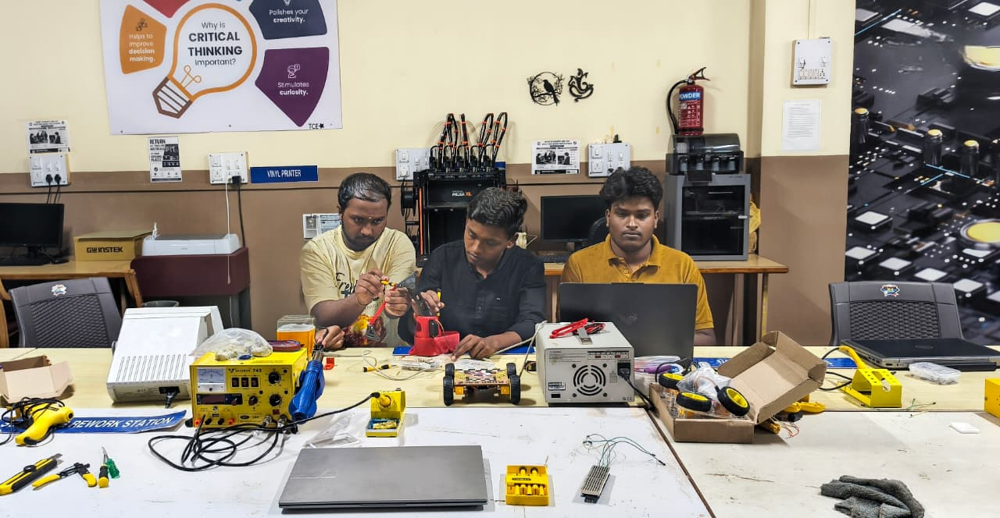

PROJECT 06
Project Development & Team Collaboration
A hands-on engineering development experience focused on practical implementation, teamwork, technical learning and collaboration.

Project Overview
This project highlights practical engineering development and team collaboration through hands-on work in the Idea Lab. It reflects the process of sharing ideas, developing prototypes, solving technical challenges and learning through implementation.
Activities
Practical prototyping, hardware development, testing, troubleshooting and collaborative engineering work.
Team Collaboration
Working together on engineering activities helped develop problem-solving abilities, technical knowledge and teamwork skills.
← Back to Selected Projects